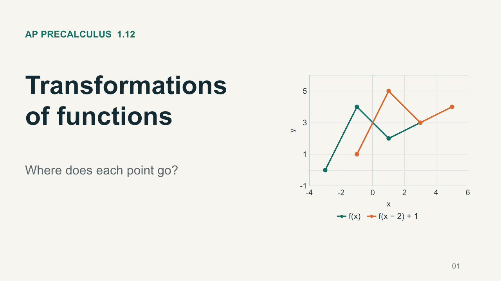

← Precal
Transformations of Functions
· 1.12
Download PPT

← Prev
1 / 19
Next →
Choose a slide
1. Transformations of functions
Fullscreen
← → or Space to navigate
Enable JavaScript to navigate, or
download the PowerPoint
.